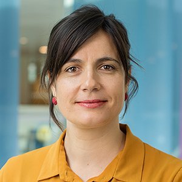

Aktionsvorsitz
Dr Moritz Weiss
Leitung WG1
moritz.weiss@gsi.lmu.deEin inklusives, multidisziplinäres Netzwerk, das die intellektuellen und analytischen Gemeinschaften Europas zu Sicherheitsfragen zusammenführt, aus Wissenschaft, Politik und Praxis. NetSec ist die COST-Aktion CA24154, die von Oktober 2025 bis Oktober 2029 läuft.
Die Aktion fördert Synergien zwischen nationalen und lokalen epistemischen Communities, überbrückt die Kluft zwischen Wissenschaft und Politik und adressiert Geschlechter- und Generationen-Ungleichgewichte im Feld. Durch interdisziplinäre Forschung, jährliche Konferenzen, Politik-Workshops, ein Mentoring-Programm und eine Summer School trägt NetSec zu einer kohärenten europäischen Sicherheitsforschungs-Community bei.
Durch die Verbindung akademischer, politischer und praktischer Communities auf dem gesamten Kontinent stärkt NetSec Europas strategische Autonomie in einem zunehmend komplexen globalen Sicherheitsumfeld.
Aufbau einer multidisziplinären Community zwischen Wissenschaft, Politik und Praxis.
Die Lücke zwischen Forschung und Entscheidungsfindung in europäischer Sicherheit schließen.
Die nächste Generation der Sicherheitsforschung gegen Fragmentierung rüsten.
Mehr erfahren
Häufige Fragen zu Teilnahme, Förderungen, Sitzungen und Website, an einer Stelle beantwortet.
MC, STSM, ITC, MoU, e-COST… alle Abkürzungen, die Ihnen im ersten Monat begegnen, erklärt.
Logos, Boilerplate-Beschreibung, empfohlene Förderhinweise und Medienkontakte.
Arbeitsbereich der Aktion: Sitzungsnotizen, Entscheidungsregister, Anleitungen, Vorlagen, Erfahrungsberichte.
↔ Horizontal scrollen, um den gesamten Zeitplan zu sehen
Leitung WG1
moritz.weiss@gsi.lmu.deWissenschaftliche Vertretung des Förderträgers
m.p.c.e.robin@fgga.leidenuniv.nlOutreach & Verbreitung

Stellvertretung: Dr Chiara Libiseller
Co-Leitung: Prof Filip Ejdus
Co-Leitung: Ms Alisa Kerschbaum

Co-Leitung: Dr Silvia D'Amato
Co-Leitung: Dr Šárka Kolmašová
University of Belgrade
University of Amsterdam
James Madison University
Metropolitan University Prague

King's College London
Vertreter·innen aus jedem teilnehmenden COST-Mitgliedsland. Die Länder-Vertretungen gestalten die Richtung der Aktion gemeinsam mit den Arbeitsgruppen-Leitungen.
* Schätzung anhand der Vornamen
 Albanien
Albanien Bosnien und Herzegowina
Bosnien und Herzegowina Bulgarien
Bulgarien Kroatien
Kroatien Zypern
Zypern Dänemark
Dänemark Finnland
Finnland Frankreich
Frankreich Georgien
Georgien Deutschland
Deutschland Griechenland
Griechenland Island
Island Irland
Irland Litauen
Litauen Moldau
Moldau Montenegro
Montenegro Niederlande
Niederlande Nordmazedonien
Nordmazedonien Norwegen
Norwegen Polen
Polen Portugal
Portugal Rumänien
Rumänien Serbien
Serbien Slowakei
Slowakei Slowenien
Slowenien Spanien
Spanien Schweden
Schweden Schweiz
Schweiz Türkiye
Türkiye Vereinigtes Königreich
Vereinigtes KönigreichNetSec wurde im Rahmen der COST-Ausschreibung OC-2024-1-27931 vorgeschlagen, eingereicht von Dr. Hugo Meijer (Sciences Po, Paris). Zweiundfünfzig Forscherinnen und Forscher aus einundzwanzig Ländern haben sich bei der Gründung zur Aktion verpflichtet. Das aktuelle Management Committee, oben aufgeführt, ist aus dieser Gruppe gewachsen, als weitere COST-Mitgliedsländer ihre Teilnahme nach der Ausschreibung ratifiziert haben.
* laut Ausschreibung. Die aktuelle MC-Zusammensetzung weicht ab
Quelle: veröffentlichter Ausschreibungsantrag. Um einen Eintrag entfernen zu lassen, bitte das Kontaktformular verwenden. Verantwortlich für die Datenverarbeitung ist Universiteit Leiden, siehe Datenschutzhinweis.
Eine Auswahl der häufigsten Fragen. Die vollständige Übersicht steht auf der dedizierten FAQ-Seite.
Zentrale COST- + NetSec-Begriffe, die auf der Website am häufigsten vorkommen. Die vollständige Übersicht steht auf der dedizierten Glossarseite.
NetSec ist aus Arbeiten der European Initiative for Security Studies (EISS) hervorgegangen und teilt weiterhin Veranstaltungsorte, Forschende und eine wissenschaftliche Ausrichtung mit dem EISS-Netzwerk. Der vollständige Text dieses Abschnitts wird derzeit von der Aktionsleitung und der WG4-Leitung verfasst. Er wird die institutionellen Verbindungen, die gemeinsamen Vereinbarungen zu Konferenz und Sommerschule sowie die Abgrenzung zwischen den beiden Vorhaben erläutern.
Text in Vorbereitung, Inhaltsverantwortung: Aktionsleitung + WG4-Leitung.